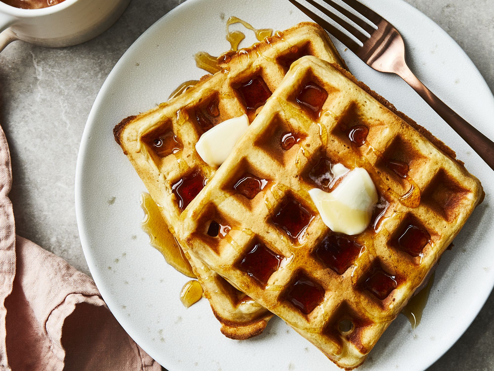

Waffles

Description
Ingredients
- 1 1/4 cups weak wheat flour
- generous pinch of kosher salt
- generous pinch of sugar
- 1 1/4 cups cream
- melted unsalted butter
Steps
- Pour ¾ cup + 1 Tbsp. water into a large bowl. Stir in flour, salt, and sugar to form a batter.
- Using an electric mixer on medium-high speed, whip cream in another large bowl until soft peaks form; fold into batter (it should be fully combined, but not overmixed).
- Heat waffle iron to proper working temperature and brush very lightly with butter. Pour in a suitable amount of batter and cook until waffle is nice and golden. Repeat with remaining batter.
Return to Main Page